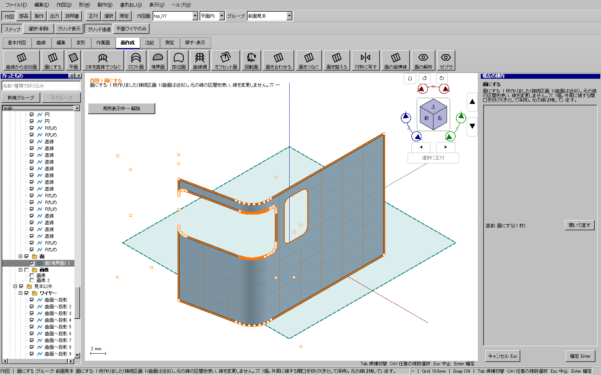
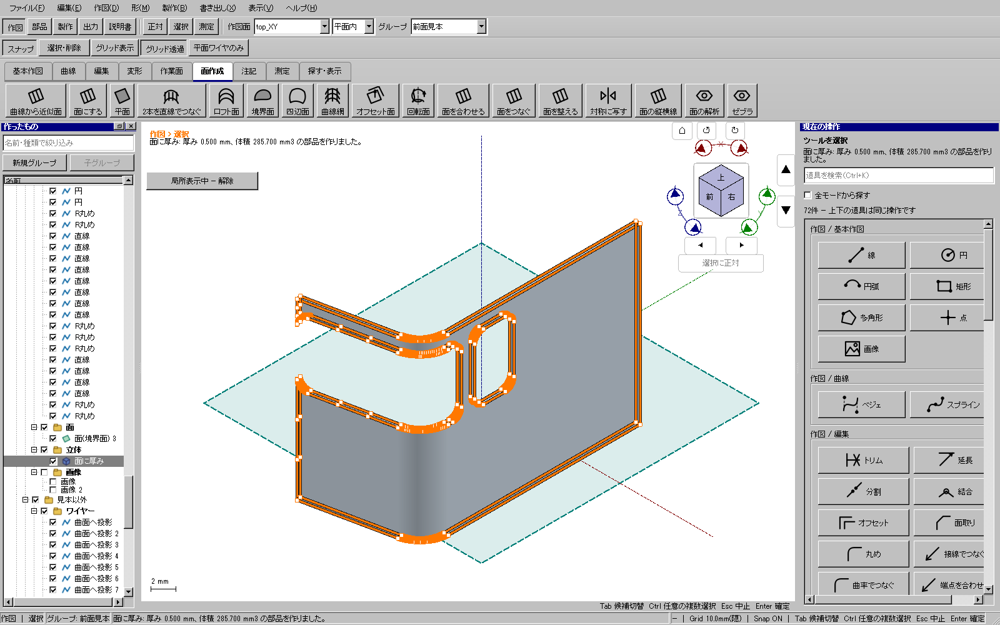
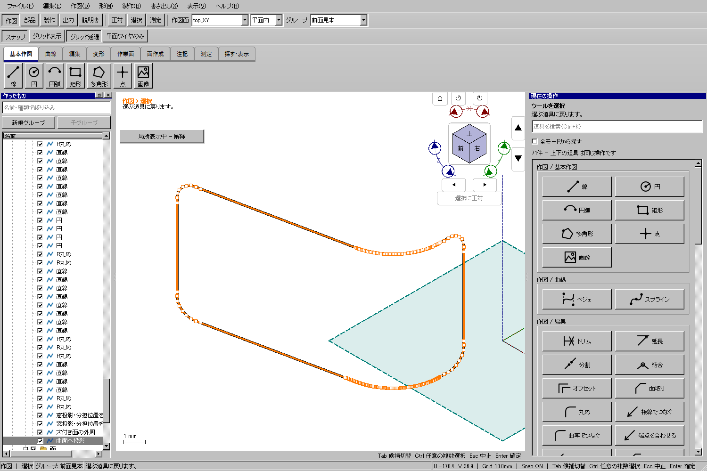
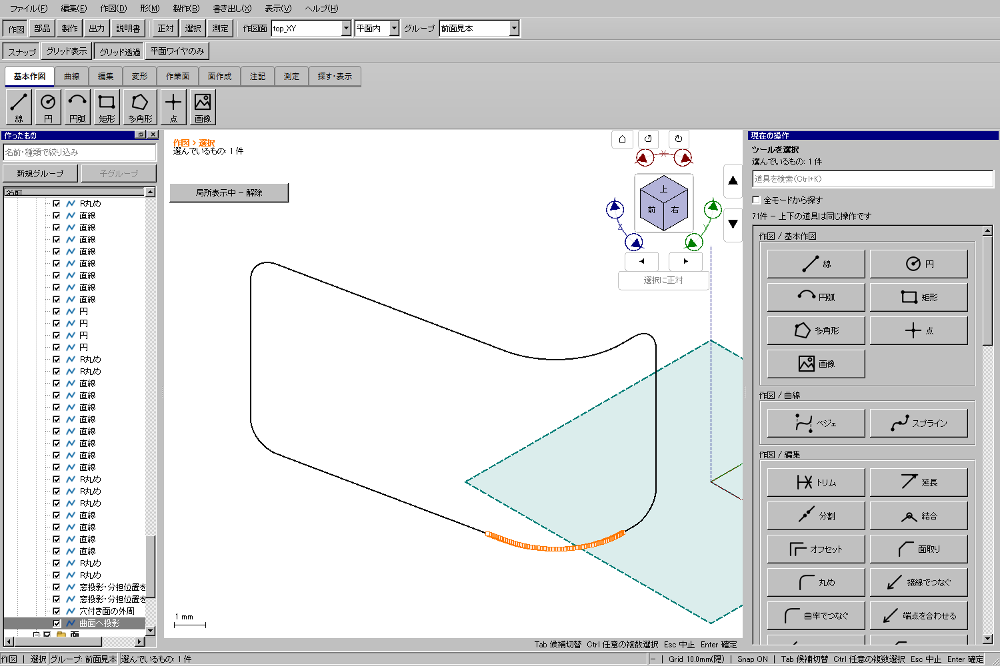
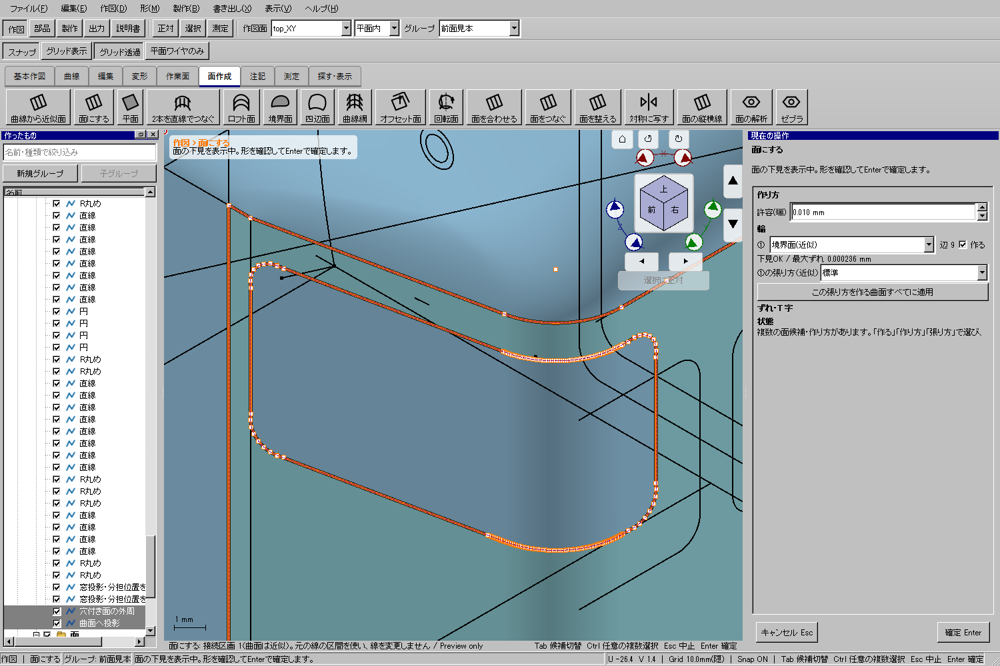
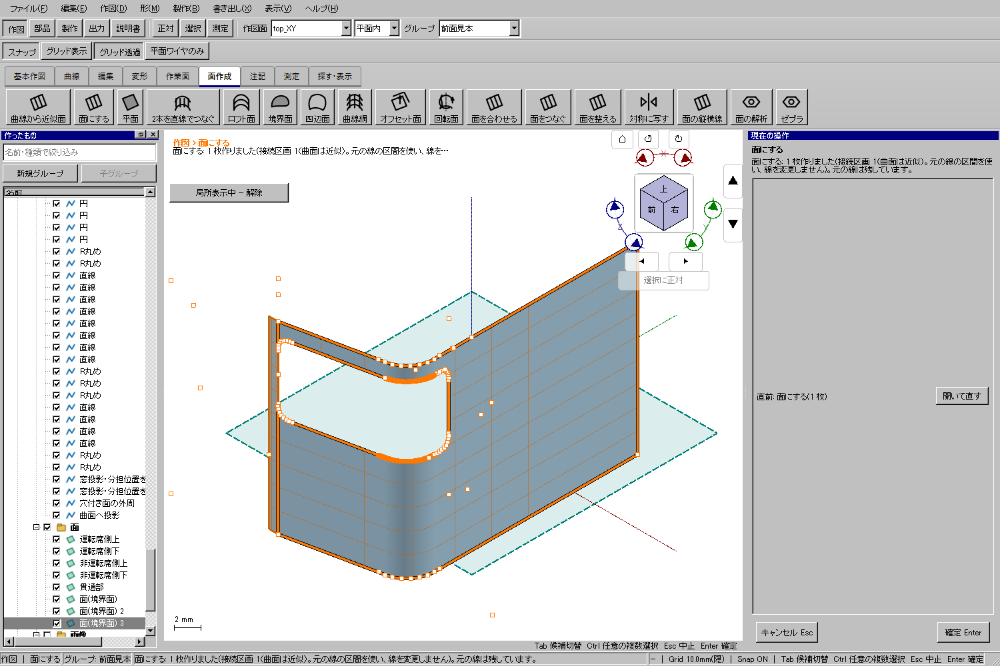
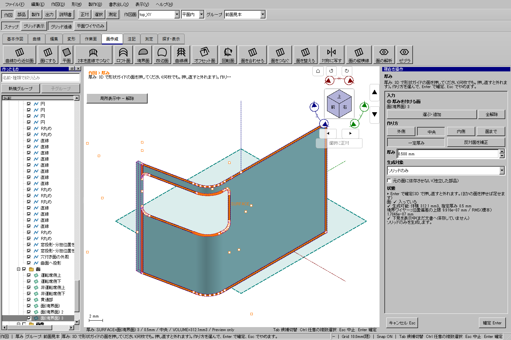
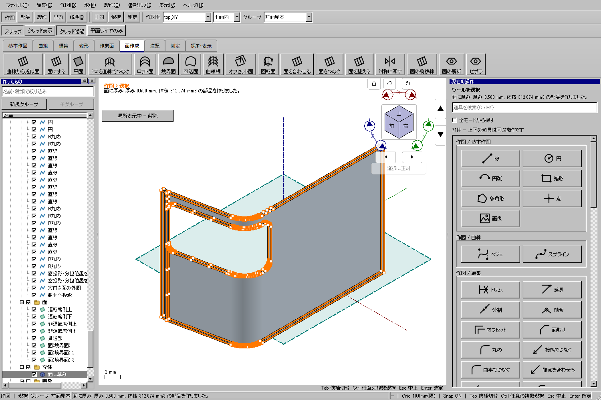

説明書 ／ 正面・側面の2枚から投影 ／ 既存の部品を削る
車体の外周と窓の閉じた輪郭を「面にする」で一緒に選びます。既存の曲面上にある輪郭なら、その曲面を保って窓の内側を除きます。その結果に「厚み」を付けると、窓穴のある部品になります。
Ctrl＋クリックは面作成の線を選び足す操作です。任意の線を削除する場合だけ、上部の「選択・削除」を押します。その間は右側に「入力は一時停止中」と表示されます。「元の入力へ戻る」で前の輪郭へ戻り、「選択を入力に使う」で今選んだ線を面作成へ渡せます。重複辺と、残る輪郭に設定した許容内で重なる余りだけを計算時に整理します。仕切線や開いた内周を勝手に省くことはありません。元のワイヤー・曲線形式は保持し、許容値を自動で増やしません。
画像は115面.kcd2の確認用コピーを実アプリで処理した画面です。原本は上書きしていません。試験用の外周・投影元のコピーは文書APIで準備し、投影・面生成・厚みは製品ツールで下見・確定しました。曲線部分の選択は3Dビュー上のクリックでも確認しています。
115投影.kcd2のように窓の左端が車体外周につながる場合は、左側が開いたコの字形が正しい結果です。窓を囲むために外周を広げる必要はありません。元の外周、正面側と側面側のパノラミック窓、隣の窓の輪郭をまとめて選び、「作図 → 面作成 → 面にする」を実行します。左一覧ではCtrlを押しながら選び足せます。複合ワイヤーの一部分だけが必要な場合は3Dビューでその区間を選んでください。
閉じた内周は複数あっても、それぞれ穴として残します。外周に接する輪郭は切り欠きになります。下見で窓が空いていることを確認して「確定」を押します。「寄せる」、端の許容差、張り方、辺の連続は「詳細設定」を開いた場合に操作できます。輪郭が開いている場合は、余分な補正で無理に埋めず、どの端が合っていないかを確認してください。

生成した面を選んで「部品 → 作成 → 厚み」を実行し、この例では中央・0.5 mm・ソリッドのみで確定します。元の面が重なっている場合は、生成結果を選んで局所表示すると開口が分かります。

テールライトなどの円が面の境界にまたがる場合も同じ考え方です。片側の面には半円状の切り欠きができ、隣の面と合わせたときに丸い開口になります。上側・下側の両部材で同じ輪郭を使い、組んだときの位置と開口を確認してください。
以下は隣の中央面まで外周を広げ、窓を完全に囲む場合の手順です。元の外周で切り欠きを作る場合には、この外周追加は不要です。
外周は、窓より大きい閉じた輪郭にします。今回のモデルでは窓の左端が「運転席側上」の面の端と同じX=6 mmにありました。その面だけを外周にすると、窓は外へ開いた切り欠きになります。窓の周囲に材料を残すため、隣の中央面も含めて外周をX=5 mmまで1 mm広げています。窓の輪郭自体は動かしません。
面同士の継ぎ目を越える外周でも、対応する元の面がそろっていれば切り出せます。外周や窓が面から離れている場合は、形状を直してください。許容値を大きくして隙間を隠す操作ではありません。
2枚から投影する手順に従い、正面側は車体へ向かうY方向、側面側は車体へ向かうX方向を指定します。「通常ワイヤー（編集可能）」で残すと、投影元から独立して編集できます。
2枚の作図で同じ区間を二重に投影すると枝分かれになります。今回のコピーでは前面のX=15 mmを分担位置として重複部分を切り詰め、上下の接続点を合わせました。四隅のRは切り落としていません。投影先には窓全体が載る車体の面を選びます。

曲線の途中をクリックすると、その曲線部分を一続きの区間として選べます。表示の細かい標本点ごとに選ぶ必要はありません。隣の直線は別の区間です。角のRに限らず、S字や円筒上へ投影された曲線にも同じ扱いを使います。複合ワイヤー全体を使いたい場合は左一覧でそのワイヤーを選びます。
部分的な隙間補正で、既存の面・部品・寸法の参照を壊す場合は処理を中止して理由を表示します。その場合は独立したコピーで補正してください。参照されている元の区間を黙って削除しません。

すでに投影済みの線を使う場合、投影し直す必要はありません。左一覧で車体の外周ワイヤーを選び、Ctrlを押しながら窓の正面側・側面側のワイヤーを追加します。右の輪一覧が増えない場合は「選択・削除中」になっていないか確認し、「選択を入力に使う」を押します。投影が重なった余りは、今の許容内で残る輪郭に重なる場合だけ整理します。違う形の枝や開いた窓は省きません。状態欄の区間数と下見を確認してください。

元の面は残ります。重なった元の面が表示されていると、穴が埋まったように見えます。できた面を選び「局所表示」を使うか、元の面を非表示にしてください。窓の内側が空き、その周囲に車体が残ることを確認します。



複合曲面の継ぎ目によっては、各面の厚み領域を個別に作り、その重なりを結合します。この場合は状態欄に案内が出ます。継ぎ目の形は各面の厚み領域の和になります。接続しないものや、安全検査を通らない形は部品として確定しません。
窓のふたやライトを作るなら、閉輪郭またはその内側から作った面を「押し出し」の①「押す面／輪郭」に入れます。曲面に沿う法線は場所ごとに違うため、全体をまっすぐ伸ばすにはX・Y・Zまたは指定ベクトルの共通方向を選びます。「距離」「両側」「選んだ面まで」と終端オフセットを使い分けます。出力に「ソリッド／面」を含めてください。
車体を残したいときは外周＋窓から作った穴付き面を押し出します。窓そのものを埋めるふたなら、窓輪郭だけを使います。ワイヤーだけの出力は輪郭のコピーであり、部品の中身は作りません。
この結果をプラ板や紙へ展開する場合は、窓と切り欠きを残して、曲面を1枚に近似・展開する手順へ進んでください。複数穴を残し、0%・途中・100%からワイヤー、面、厚み付き部品を作れます。
実際に3Dで接続する交差線は区画の境界になります。閉じた内周は穴として扱い、面に使わない枝は右側へ表示します。画面上だけ交差する線、深さの違う端点、開いた輪郭は同じ接続ではありません。下見の区画数と、使われない区間を確認してください。窓を横切る区切り線などで内外が一意にならない場合は、輪郭を整理してから実行します。